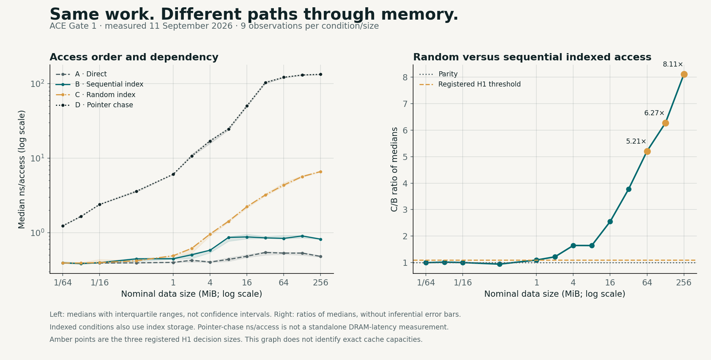

Boundary 01
Evidence-state
Does the available evidence support the claim, fail to support it, contradict it, or leave a necessary premise missing?
NSDM investigates whether AI systems can distinguish between claims that are supported, unsupported, contradicted, under-specified, governance-ambiguous, or reward-aligned but unjustified.
The central question is simple: does the system know what its evidence actually justifies—and what action, recommendation, simulation or intervention, if any, it is authorised to produce?
Modern AI systems often produce plausible answers without clearly separating evidence, prediction-time validity, policy authority, uncertainty, consequence, environmental validity and action permission. NSDM treats those as separate boundaries.
Does the available evidence support the claim, fail to support it, contradict it, or leave a necessary premise missing?
Is the action allowed, forbidden, ambiguous, outside authority, audit-sensitive, or requiring human review?
Should the system answer, recommend, ask for clarification, request more evidence, abstain, refuse, escalate, pause, or block?
Compliance controls can determine whether a class of action is permitted. NSDM asks the additional question: is this specific decision sufficiently supported, authorised, proportionate, environmentally valid and reproducible to proceed now?
Model capability is expanding faster than the infrastructure needed to prove that a decision is valid, authorised, safe, resilient and economically defensible. NSDM is built for that bottleneck.
The research focus is not another general chatbot, dashboard, retrieval leaderboard, policy questionnaire or autonomous QA clone. The first Workbench kernel now operationalises the identity, authority, versioning and audit boundary; governed evidence, decision synthesis and Action Assurance remain later milestones.
The same evidence states, prediction-time contracts, deployment gates, signed run records, recommender passports and cost-per-justified-decision measures can be reused across products, sectors, benchmarks and regulatory environments.
GOV-0 is an early, hand-designed seed benchmark used to test evidence-state, governance-state and action-state classification under decision-boundary pressure.
Results are preserved with their actual boundaries. Positive, partial and null findings are all part of the research record.
| Experiment | Representation | Target | Primary result | Interpretation |
|---|---|---|---|---|
| GOV-0 40-row seed | Text embeddings | Evidence-state | Accuracy 0.750 · Macro-F1 0.769 | Evidence-state was harder than governance-state and action-state classification. |
| V1 contrast set | Text embeddings | Evidence-state | Accuracy 0.150 · Macro-F1 0.141 | Minimal-pair examples exposed the weakness of text-only semantic similarity. |
| V2 contrast set | Structured flags | Evidence-state | Accuracy 0.950 · Macro-F1 0.952 | Explicit NSDM diagnostic features substantially improved boundary classification. |
| EXP-008 final test | Prospective event-prefix features | Abandon within next two events | BA 0.6018 · AP 0.2689 · Recall 0.6318 | Useful ranking and calibrated risk, but no confirmed prospective result because the locked balanced-accuracy threshold of 0.65 was not met. |
The QSR experiment chain now demonstrates why strict prediction-time controls, disjoint calibration, frozen thresholds and one-time testing matter.
A smaller boundary-oriented representation improved synthetic retrospective abandon-versus-deliberate classification.
The result did not survive a strict online feature-availability audit and was not presented as a validated real-time intervention model.
The prospective benchmark passed leakage, generator, calibration and freeze controls. The final model passed six of seven mandatory checks, but failed the balanced-accuracy threshold. The null result is preserved.
NSDM is extending beyond text and classification into systems that allocate attention, create artefacts, simulate environments and guide real-world action.
Study candidate exclusion, ranking objectives, commercial influence, feedback loops, exposure concentration, user control, vulnerability and contestability. A recommendation is treated as an attention-allocation decision, not merely a relevance score.
Run model-family experiments across VAEs, GANs, autoregressive models, normalising flows, energy-based models, diffusion, transformers and multimodal systems—with explicit constraints, provenance and falsifiable evaluation.
Connect object detection, segmentation, scene graphs, temporal identity, pose, anomaly detection and counterfactual visual reasoning to uncertainty, missing evidence and controlled action.
Distinguish visual plausibility from geometry, dynamics, state persistence and simulation-to-reality validity. NSDM decides whether a learned environment is reliable enough for the intended use.
Generate candidate artefacts, rank them against human and business objectives, apply symbolic brand and safety constraints, then connect the decision to measured outcomes.
Translate the research into an AI-native Decision Office that assembles evidence, tests scenarios, produces governed recommendations, tracks outcomes and preserves an auditable institutional memory.
Content governance asks what a model generated. Agent governance asks what it may do. World-model governance asks whether the learned environment itself is a sufficiently faithful stand-in for reality.
A scene can look convincing while violating geometry, physics, object persistence or causal structure. Visual quality is therefore not evidence of functional reliability.
A system can succeed inside its learned environment and fail under sensor noise, weather, wear, unexpected people or edge-case physics. Field evidence and independent testing remain mandatory for consequential use.
NSDM is establishing a dedicated African research track because deployment quality depends on more than model choice. Power, connectivity, compute access, data locality, skills, institutional capacity, recovery options, independent evaluation and human authority shape whether AI remains useful and governable in practice.
Test degraded operation, retry behaviour, local-versus-cloud inference, cross-border processing, source caching, evidence staleness and recovery under constrained connectivity.
Evaluate target validity, population prevalence, subgroup performance, structural proxies, prediction-time leakage, distribution shift, abstention, appeal and human review.
Measure local compute exposure, vendor dependence, data and model provenance, offline capability, authority boundaries and the evidence required to continue, pause or stop deployment.
Timestamped sequences, declared cutoffs, future horizons, actor-heldout evaluation, intervention cost, abstention and escalation.
Product-state graphs, critical journeys, revenue and governance failures, customer-harm analysis and reproducible deployment gates.
Versioned sources, inputs, model and rule identity, evidence state, governance state, permitted action, uncertainty and signed audit records.
Purpose and target validity, prevalence, absent populations, structural proxy discrimination, prediction-time validity and independently reproducible findings.
Tokens, GPU cycles, egress, retries, failed evaluation, hallucination, human review, exception handling and verification cost linked to supported outcomes.
Neural perception, symbolic constraints, explicit evidence states, governance states, uncertainty, consequence and controlled action selection.
The results above retain their original scope. ACE adds a separate engineering lane: whether changes in precision, runtime, scheduling and infrastructure preserve required semantics and traceability.
ACE Gate 1 is a CPU experiment and synthesis, not proof of GPU-cluster optimization.
Reconcile requests, semantics, resources and authority before accepting improvement. Topology simulation tests provenance; physical performance requires a physical experiment.
Follow the ACE scope, registered questions, measured visuals and weekly research notes. New execution studies extend the dossier while preserving the findings and limitations above.
Begin with our research questions and results, then inspect the concepts that inform the next experiments. NSDM remains an independent decision-research programme; ACE investigates the computing systems that carry those decisions. Behavioural science and neuromarketing supply application questions rather than an origin story for NSDM.
Evidence sufficiency, contradiction, uncertainty, authority and consequence. Test whether a system can preserve UNKNOWN, abstain appropriately and explain the boundary between advice and action.
Precision, compilers, memory, concurrency, placement and serving. Compare reference and transformed execution, reconcile lifecycle records and measure useful work under explicit service constraints.

External literature informs the programme; it does not validate our implementation. These are selected foundations, not a systematic review or a claim that every field is covered. Author abstracts, publication metadata and accessible source summaries were checked on 8 October 2026; full-text replication reviews remain separate work.
Garcez et al. (2019) · Survey / arXiv manuscript
Connect learned representations to explicit reasoning.
Boundary: Integration is a design approach; it does not by itself validate an NSDM decision.
Guo et al. (2017) · ICML research paper
Separate confidence scores from observed correctness.
Boundary: Calibration on one evaluation distribution does not guarantee calibration after deployment shift.
Angelopoulos & Bates (2021; revised 2022) · Tutorial / arXiv manuscript
Study prediction sets, coverage and the cost of uncertainty.
Boundary: Standard coverage guarantees require assumptions such as exchangeability; marginal coverage is not individual certainty.
Williams, Waterman & Patterson (2008) · Berkeley technical report
Relate operational intensity, data movement and performance bounds.
Boundary: A performance model is not a measurement of our hardware or proof of decision correctness.
Kwon et al. (2023) · SOSP paper / arXiv version
Understand dynamic KV-cache storage and serving efficiency.
Boundary: Published speedups belong to the authors’ configurations; they are not local ACE results.
Amodei et al. (2016) · Research agenda / arXiv manuscript
Turn objectives, side effects and distribution shift into testable failure questions.
Boundary: A problem taxonomy is not evidence that safety or alignment has been solved.
Tversky & Kahneman (1974) · Science research article
Examine representativeness, availability and anchoring.
Boundary: Classic findings require contextual testing; they do not diagnose an individual user.
Ariely & Berns (2010) · Nature Reviews Neuroscience review
Separate useful measurement questions from claims about reading consumers’ minds.
Boundary: Neural signals and behavioural proxies need construct validity, consent and independent evaluation.
Our introductory primers explain six recurring concepts through a definition, a worked thought experiment, a failure mode and a practical next test. They are educational notes, not peer-reviewed papers.
Trace premises and missing information before judging an answer.
Ask when a system should defer, and what it costs.
Test whether a faster path preserves the required decision.
Learn why amortized access time is not raw memory latency.
Reconcile identities, attempts, allocations and permissions.
Distinguish a measurable proxy from the construct you want.
The CPU memory-locality experiment measured four access conditions across 13 nominal sizes. This visual uses the committed 11 September 2026 run: 468 observations, with nine observations per condition and size.

Open full-size graph → · Open vector graph →
Can a numerical change cross a contradiction, abstention or action threshold? Compare fixed reference cases before registering a speed claim.
Inject missing terminal records, duplicate retries, stale allocations and unauthorized mutations. Local fixtures test the method; distributed systems need separate reproduction.
Reconstruct workload placement from a fixed simulated topology and trace. Physical network speed, GPU throughput and economics remain outside simulation evidence.
Does a proxy retain meaning across people, contexts and populations? Register the construct, consent basis, comparison and limits before inferring a human outcome.
Freeze the question, reference, unit of observation, decision rule, exclusions and required evidence. Record platform feasibility and all relevant toolchain versions.
Use controls, counterexamples and repeat runs. Keep held-out tests distinct from tuning. Report measurement overhead, uncertainty and alternative explanations.
Preserve code, data rights, hashes, provenance, limitations and actual status. A literature observation, synthetic fixture, measured result and independent replication are different evidence objects.
Human studies and commercial claims require additional ethical, domain and deployment validation. Neither a good benchmark nor a compelling visual supplies that evidence.
The NeuroAlchemist: essays and field notes → · Our manuscript archive →